Teil 1 · Didaktik 2.2 · Generation a3ce3d7f1e8f82b2

Emmi schlägt zu jeder Token-ID eine Zeile im Kartenbuch nach. Daraus entsteht die Anfangsperle, ein Zahlenvektor. Dieselbe ID beginnt mit derselben Darstellung; erst die folgenden Rechnungen beziehen den Satzkontext ein. Die beiden Bank-Tokis zeigen, warum ein gleiches Wort je nach Umgebung anders weiterverarbeitet wird. Die sichtbare Karte ist ein Schatten vieler Dimensionen. Pippas Positionsinformation macht zusätzlich die Reihenfolge zugänglich.
Vergleiche die Anfangsperlen der Bank-Tokis und anschließend ihre unterschiedlichen Sätze. Drehe die Lampe im Schattenspiel und überklebe bei der Blindprobe die Wortschilder.
Die Startdarstellung hängt von der ID ab. Eine andere Umgebung verändert die weitere Verarbeitung. Bei einer anderen Projektion verschieben sich die sichtbaren Nachbarschaften, obwohl die ursprünglichen Vektoren bleiben. Überklebte Wortschilder ändern die Rechnung nicht.
Trenne Embedding-Lookup, Position und spätere Kontextverarbeitung. Ein näherer Punkt auf der Zeichnung ist kein Beweis für eine richtig verstandene Bedeutung.